The Missing Fleet Manual · Overnight visual production
Part III: visual review
10 candidates, prepared for the final manual-wide review. Fleet is the product, company, or server; host groups are lowercase fleet/fleets. Published chapter prose and artwork remain in place.
All parts · Full chapter briefs
Default: 720 px
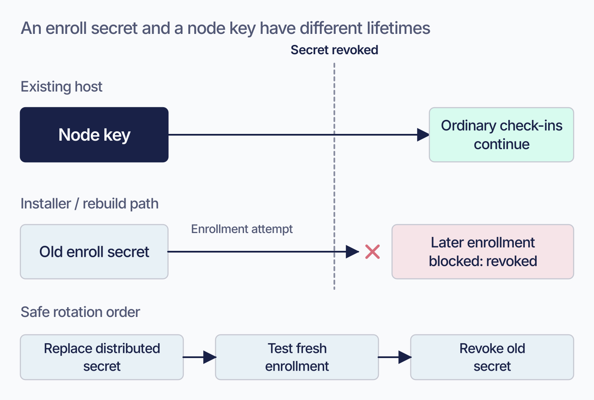
Proposed 2026-09-08; editorial brief, not technical re-verification. Reduce the repeated door/latent-failure explanation. Keep the distribution inventory, keystore differences, and exact rotation checklist. Keep current prose and this TODO until the actual image is reviewed. Then check alt text against the artwork and retain an accessible summary plus all required technical qualifications.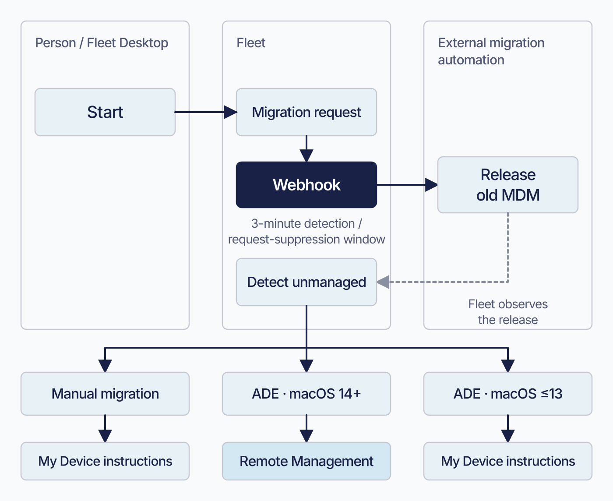
Proposed 2026-09-08; editorial brief, not technical re-verification. Replace the seven-step narrative with a short accessible sequence summary. Preserve eligibility, forced/voluntary prompting, webhook non-replay, and the three-minute window's exact meaning. Keep current prose and this TODO until the actual image is reviewed. Then check alt text against the artwork and retain an accessible summary plus all required technical qualifications.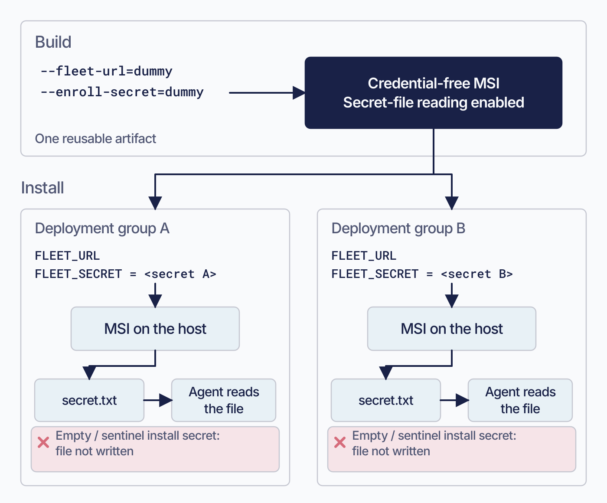
Proposed 2026-09-08; editorial brief, not technical re-verification. Replace the two explanations of how the sentinel preserves the read path. Keep the exact shell/PowerShell examples, installer-property table, and install-time failure caveat. Keep current prose and this TODO until the actual image is reviewed. Then check alt text against the artwork and retain an accessible summary plus all required technical qualifications.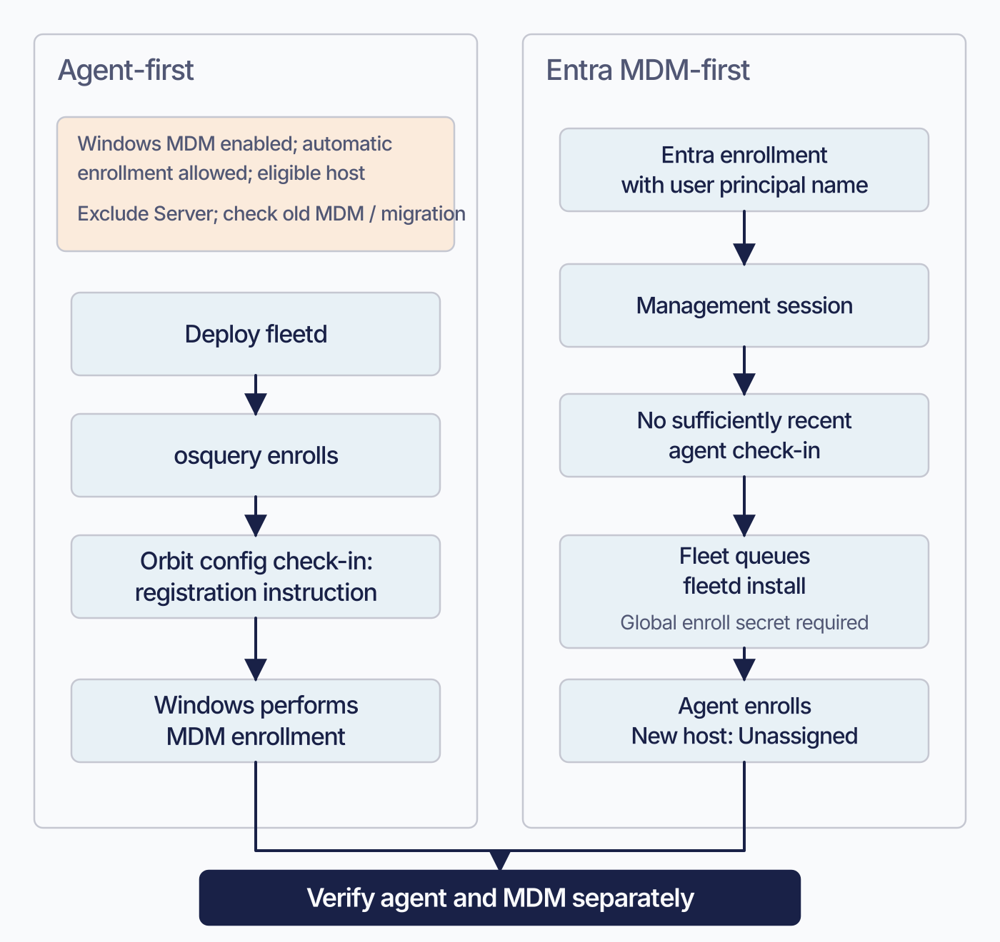
Proposed 2026-09-08; editorial brief, not technical re-verification. Priority gap from the earlier visual audit. Replace the scattered ordering comparison with a short summary of the two routes; preserve exact eligibility, freshness, egress, signing-in, and placement rules. Keep current prose and this TODO until the actual image is reviewed. Then check alt text against the artwork and retain an accessible summary plus all required technical qualifications.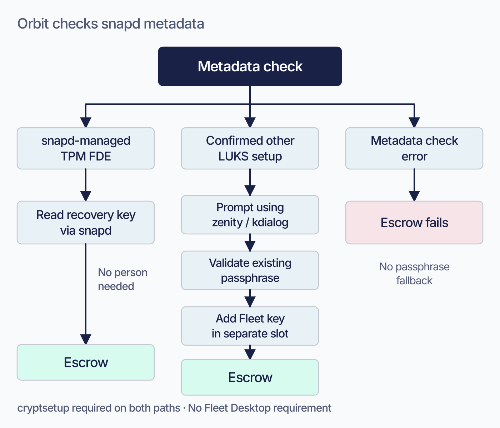
Proposed 2026-09-08; editorial brief, not technical re-verification. Reduce the branch-selection and headless-host explanations; retain the prerequisites table, exact error string, and configuration gates elsewhere in the chapter. Keep current prose and this TODO until the actual image is reviewed. Then check alt text against the artwork and retain an accessible summary plus all required technical qualifications.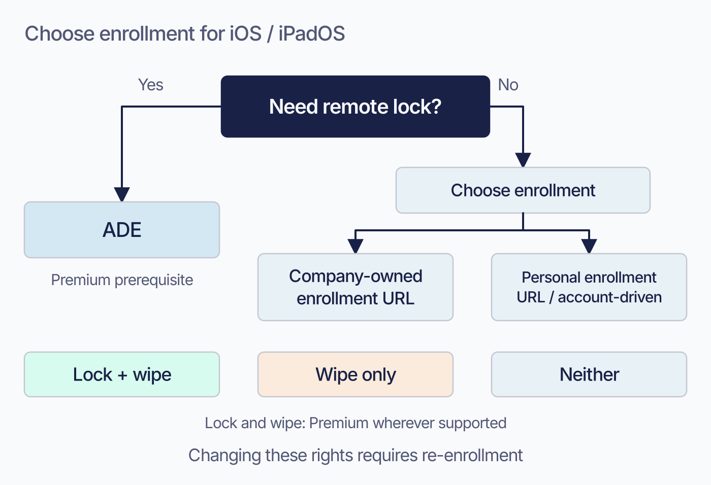
Proposed 2026-09-08; editorial brief, not technical re-verification. Reduce repeated explanation of why enrollment path controls lock access. Keep the searchable platform table, licence condition, personal-profile rights, and account-driven product restrictions. Keep current prose and this TODO until the actual image is reviewed. Then check alt text against the artwork and retain an accessible summary plus all required technical qualifications.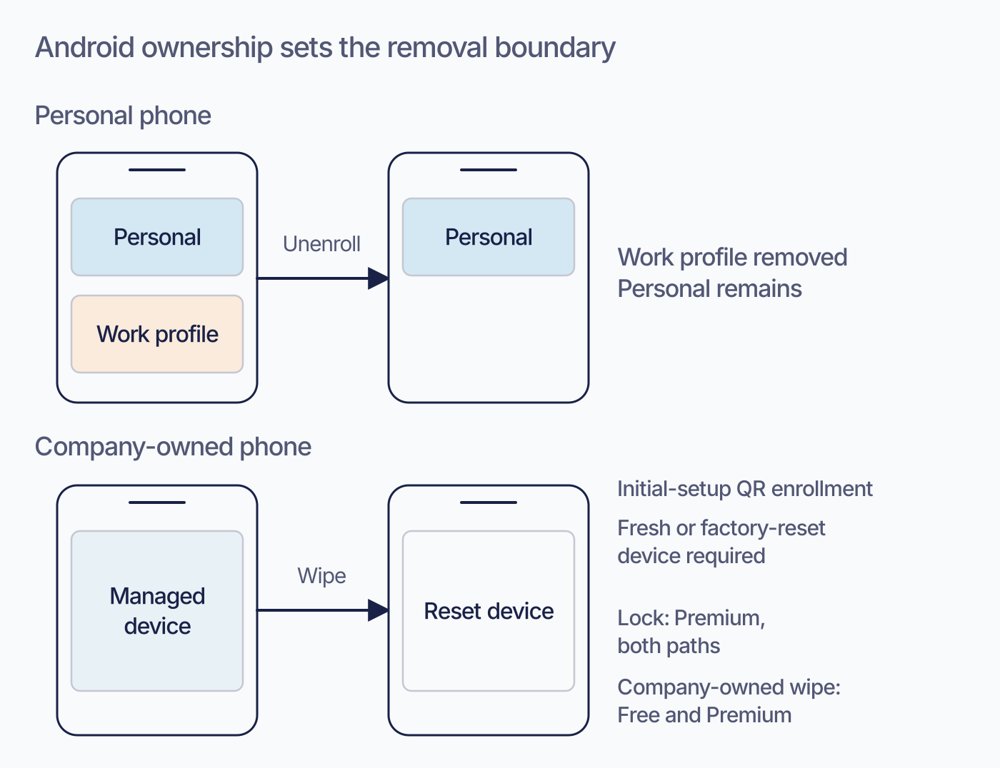
Proposed 2026-09-08; editorial brief, not technical re-verification. Condense the explanation of ownership, reset timing, and removal boundary. Retain exact enrollment steps, status labels, and the lock/wipe table with prerequisites. Keep current prose and this TODO until the actual image is reviewed. Then check alt text against the artwork and retain an accessible summary plus all required technical qualifications.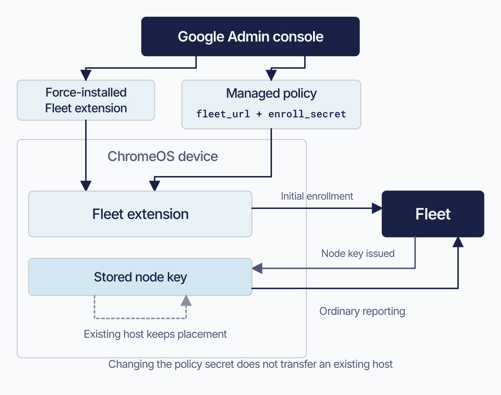
Proposed 2026-09-08; editorial brief, not technical re-verification. Replace the opening two-requirement explanation and the repeated placement warning. Keep the copy/paste procedure, TLS trust restriction, and supported-query limits. Keep current prose and this TODO until the actual image is reviewed. Then check alt text against the artwork and retain an accessible summary plus all required technical qualifications.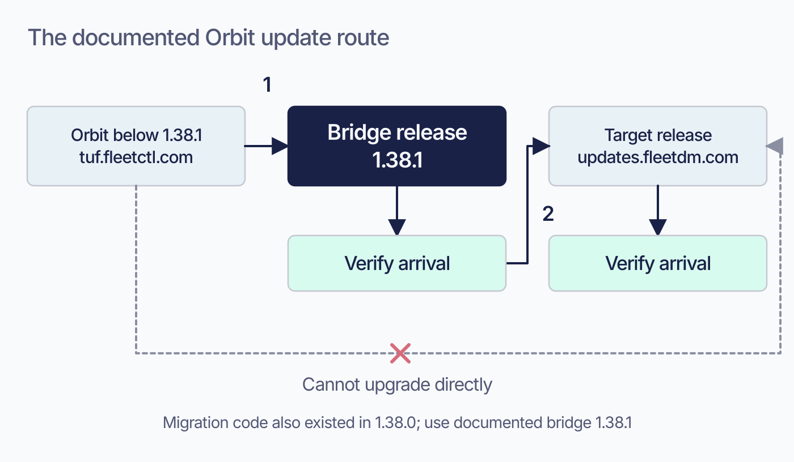
Proposed 2026-09-08; editorial brief, not technical re-verification. Replace the repeated bridge explanation with a short two-stage procedure and the figure. Retain the exact error string and why 1.38.1 is the supported stepping stone. Keep current prose and this TODO until the actual image is reviewed. Then check alt text against the artwork and retain an accessible summary plus all required technical qualifications.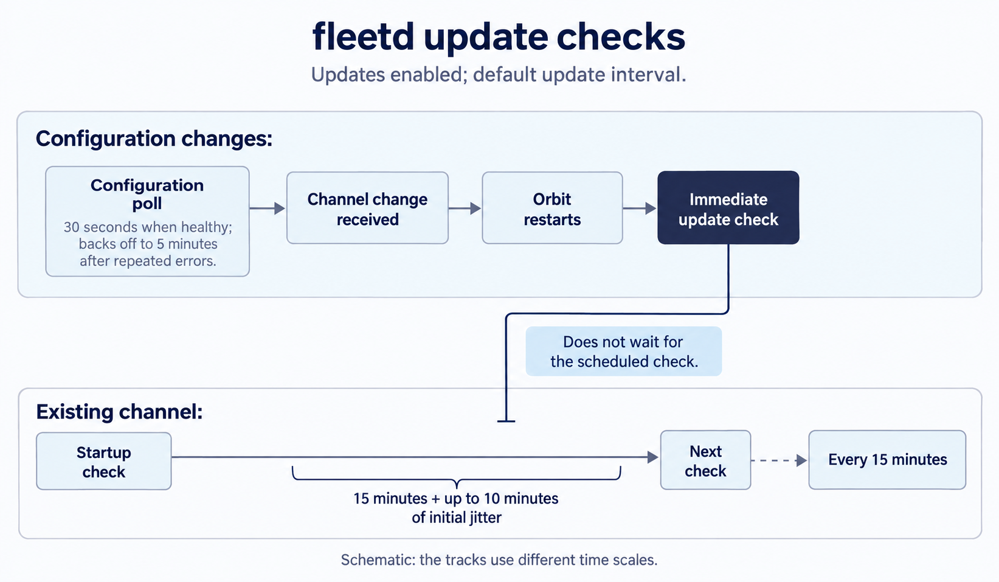
Brief revised 2026-09-08 following visual review. Editorial draft grounded in the current chapter and its existing ledger; this edit is not a new release verification. Before rendering, check every arrow, timing, scope qualifier, and selected transition against the chapter. Resolve any conflict before accepting the artwork. Preserve the current asset until its replacement is reviewed. Update alt text to describe the replacement when installed. Retain editable SVG when available. Change to IMAGE-OK only after rendered-image review.Compare the current book image
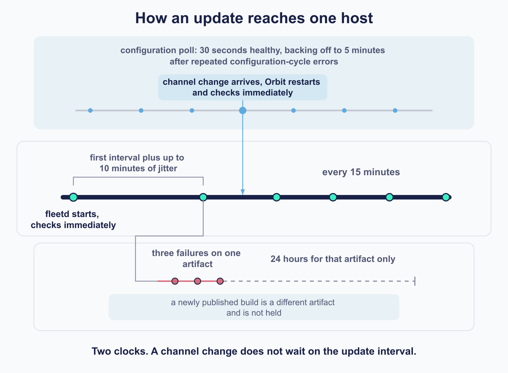